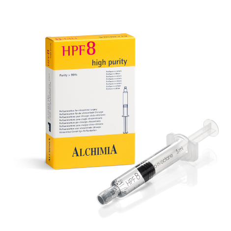

Our partners - are world-famous manufacturers of medical products and equipment with guaranteed high quality
-

Plasti-med was founded in 1995 and is one of the largest manufacturers of disposable medical supplies in Turkey.
Plasti-med manufactures disposable medical supplies for anesthesia, drainage, urology, gynaecology and general use.
The company manufactures products in accordance with international standards.
Among the range of urological products are nephrostomy catheters, ureteral catheters, wire guides, stents, loops and stone extraction baskets.
The range of anaesthetic products includes filters, contours, masks and Ambu bags.
-

Baxter is an American company, founded in 1931.
For almost a century, they have pioneered medical innovations that have changed healthcare. The high quality of manufactured products and their continuous improvement is an integral feature of Baxter’s activities. In all countries, the company’s products meet the same, highest possible standards and the production process is carefully controlled at all stages.
The key product lines of the manufacturer are surgical sealants used in cardiac surgery, thoracic and abdomino-pelvic surgery, and haemostatic products intended for surgical procedures.
-
Quantel Medical is a company that has been developing, manufacturing and marketing innovative medical laser and ultrasound solutions for over 15 years.
Quantel Medical is a world leader in ophthalmology; its lasers and ultrasound machines are designed to diagnose and treat the four main causes of blindness: cataracts, glaucoma, diabetic retinopathy and macular degeneration, as well as dry eyes.
The company is famous for its advanced, state-of-the-art equipment such as ultrasonic diagnostic ophthalmic machines, YAG laser photodisruption machines (for laser treatment) and retinal laser photocoagulation machines.
-
Topcon Healthcare is an eye health company. The company presents intelligent and efficient technologies to improve patient care.
Topcon Healthcare provides the latest integrated solutions to help fight eye disease in an ageing population by supplying providers with advanced imaging, diagnostics and intelligent data technologies.
The company offers tools for the early detection and treatment of eye diseases.
The range represents a wide range of ophthalmic equipment, such as:
- autorefractor keratometers – for ophthalmological measurements;
- computerised tonometers – for obtaining diagnostic information;
- digital slit lamps – premium-class devices for observation and diagnosis of the eyeball and its parts with magnification;
- microscopes for operations, treatment and examination. -

SCW MEDICATH, founded in 1996, is the first facility to design and manufacture central venous catheters and pressure transducers in China.
SCW specialises in intensive care, obstetrics and gynaecology, urology, orthopedics and other high-value medical supplies.
The company provides products that match the quality of market leaders through innovative design and lean manufacturing.
Among the wide range of products presented are those in the field of obstetrics and gynaecology (balloon uterine stent, postpartum balloon with rapid installation), and products for urology and X-ray endovascular surgery.
-
Integra LifeSciences was founded in 1989 in the USA, and is a world leader in medical technology.
Integra is a world leader in neurosurgery and offers a wide range of products and solutions for dural access and repair, cerebrospinal fluid management and neurocritical care. There are also products for the restoration of soft tissues, nerves and tendons, the treatment of acute and chronic wounds and burns, and for plastic and reconstructive surgery.
The key products are the dura mater sealing products, and the spinal dura mater sealing and anti-adhesion system. -
Alchimia, an Italian ophthalmological company, was founded in 1993.
It is one of the leading European manufacturers of medical devices for ophthalmic surgery and tissue banking.
Alchimia’s R&D department specialises in ophthalmology with extensive experience in chemistry, biology, biotechnology and bioengineering, and cares about the health of patients.
The company produces a wide range of products for ophthalmic surgery (silicone oils, medical solutions for ophthalmology, and polymeric ophthalmic devices for aspiration and irrigation). -

MED-LOGICS has been producing high-quality products in the field of ophthalmology since 1992.
The company upholds the highest quality standards, in accordance with a corporate culture based on family morals and values.
MED-LOGICS offers premium products for cataract surgery, corneal tissue donor surgery and associated products.
The company maintains the highest standards and this is reflected in the corporate culture, products and services.
The company manufactures high-quality disposable microsurgical ophthalmic blades and keratoplasty devices.
-

Bonree Medical was established in 2015.
The main activity of the company is the manufacture of medical instruments used in hospitals, therapy, emergency and clinical care.
Bonree Medical specialises mainly in the research and production of medical catheters in urology, respiratory and anaesthesia, including Foley catheters, urology products and other minimally invasive products.
-

CIOM is an Italian company specialising in the production of high-quality trial lenses for refraction examination. The company was founded in 1971 in Milan, where the headquarters and production site are still located. Over the years, CIOM has established itself in the optics and ophthalmology market as a point of reference, defining a high-level quality and design standard and becoming a reliable partner and supplier to the largest companies in the sector.

-

The priority of the TITAN MEDICAL company is the production and supply of microsurgical instruments for ophthalmology.
Keeping the traditions of the past, and using the advanced experience of up-to-day leaders among manufacturers of medical instruments, the company meets the highest requirements of the leading ophthalmological surgeons from different countries of the world.
-
Volk Optical is the leading brand manufacturer of ophthalmic lenses, diagnostic imaging and surgical products for the ophthalmic industry.
Founded over 40 years ago, Volk continues to integrate quality and artisanal craftmanship with modern technology to bring the world’s leading ophthalmic lenses in the hands of the doctors, scientists and researchers who are putting their mission to work: eradicating preventable blindness.
Lenses and imaging devices allow for optimal use in every environment with a high level of efficiency and efficacy. This has transformed the screening, diagnosis and treatment process for preventable blindness in parts of the world that have limited access to resources.